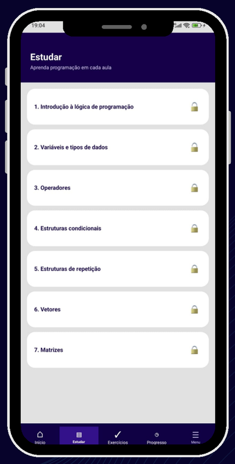

Trilha de estudo
Os conteúdos de programação seguem uma sequência de aprendizado: os próximos assuntos só são liberados depois da conclusão das etapas anteriores.
Cada assunto traz resumo, exemplo e videoaulas para complementar a aprendizagem.
